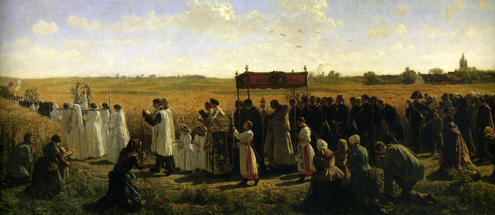

Quote Generator
Home
Feast Days
"When I die, I will send down a shower of roses from the heavens, I will spend my heaven by doing good on earth."
-St. Therese
"If I did not simply live from one moment to another, it would be impossible for me to be patient; but I only look at the present, I forget the past, and I take good care not to forestall the future."
-St. Therese
"Do you realise that Jesus is there in the tabernacle expressly for you – for you alone? He burns with the desire to come into your heart… Don’t listen to the demon; laugh at him, and go without fear to receive the Jesus of peace and love.",
-St. Therese
"The guest of our soul knows our misery; He comes to find an empty tent within us – that is all He asks."
-St. Therese
"Holiness consists simply in doing God’s will, and being just what God wants us to be."
-St. Therese
"True charity consists in bearing all our neighbour’s defects – not being surprised at their weakness, but edified at their smallest virtues."
-St. Therese
"The good God does not need years to accomplish His work of love in a soul; one ray from His Heart can, in an instant, make His flower bloom for eternity."
-St. Therese